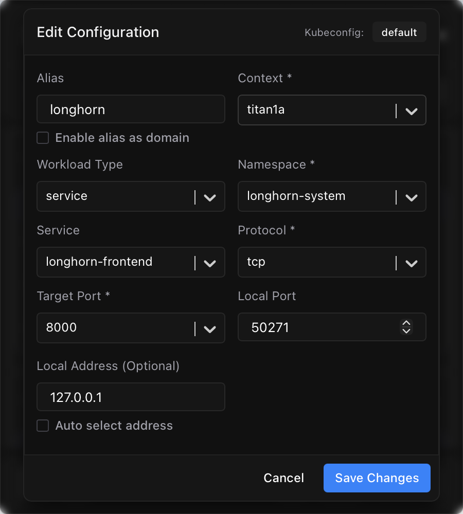

Lately I have been switching between several Kubernetes environments, and one small thing kept getting annoying.
Some services are only meant to be used from inside the cluster. When I want to quickly open a page or call an API, the most direct option is still kubectl port-forward:
1 | kubectl -n monitoring port-forward svc/prometheus 9090:9090 |
One or two services are no big deal. Once there are several environments, though, it starts getting messy: which kubeconfig has this service, which namespace is it in, and which local port did I use last time? Leave it alone for a few days and I am looking it all up again.
I used to either add a temporary HTTPRoute or open a terminal and run kubectl port-forward. The first feels a bit heavy when I only need to take a quick look; the second leaves me with an ever-growing pile of commands that I will not remember later.
Then I found kftray. It has been pretty handy, so I thought I would write it down.
The project lives here: hcavarsan/kftray.
The download includes two tools: kftray and kftui. The first is the GUI version and lives in the macOS menu bar; the second is terminal-based. I have only used kftray so far, so that is all this post covers.
Its real job is simple: stop making me remember commands
The idea behind kftray is straightforward: save the port-forward configurations you use often.
That means no more typing a long command every time or digging through shell history. Open the menu bar app, find the service, and click it. It can keep configurations for multiple kubeconfigs and clusters in one place too.
Here is what the main view looks like:

It feels especially useful when you have several environments but only regularly visit a handful of internal services, such as Grafana, Prometheus, internal APIs, or admin pages.
Set it up once, and it stays out of the way
Creating a configuration is basically filling in the same information that goes into a kubectl port-forward command: choose a kubeconfig and context, then select the namespace and target service, followed by the local and remote ports.
The nice part is that after choosing a kubeconfig, the form loads the available namespaces and services for you to pick from. I do not need to remember or type their names myself.

There is no need to overthink local ports either. If you leave it blank, kftray picks an available one automatically. Since the UI can open the page directly, I usually do not even need to remember the resulting localhost:port.
Click it when you need it
Once the configuration is saved, I can mostly forget about it. When I need a service, I just start it from the menu bar.
For web services, my favorite part is being able to open the local address directly. I used to remember which localhost:port a forward was using; now I start the forward and click once to get there.

It is not a complicated feature, but it makes the everyday flow noticeably smoother. If I only need to check Grafana or Prometheus, or hit an API that only exists inside the cluster, I no longer have to open a terminal, find a command, and copy a port around.
It is not limited to Services
The configuration form also lets you choose different workload types:

I still use Services most of the time, since many applications are exposed through one. But when I need to target a workload directly, I can select the appropriate type here.
Final thoughts
kftray does not replace kubectl port-forward. It mostly puts the parameters and repetitive steps somewhere easier to use. It still uses the permissions from my local kubeconfig, so a service I cannot access from the command line will not suddenly work in the GUI either.
For me, that is enough. I configure the internal services I use most, then open them with a click from the menu bar instead of remembering a context, namespace, and port each time.
If you often find yourself asking “what was that port-forward command again?” when you only need to check a service for a minute, it is worth trying.